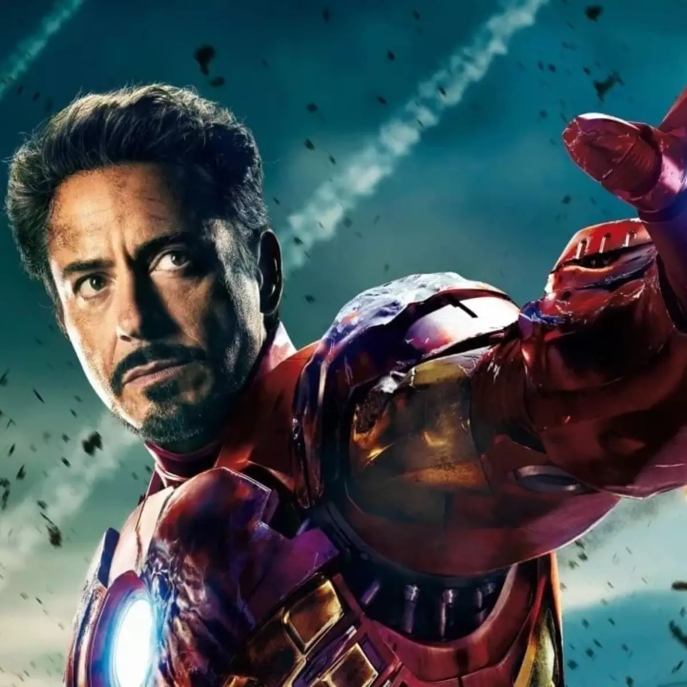
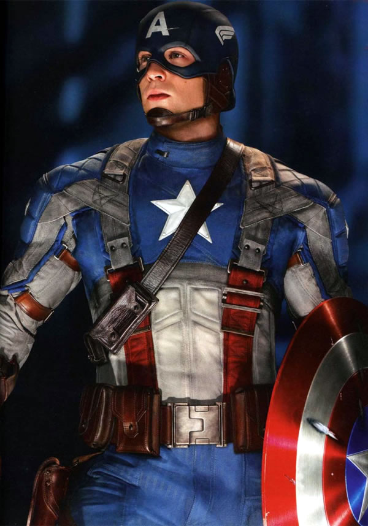
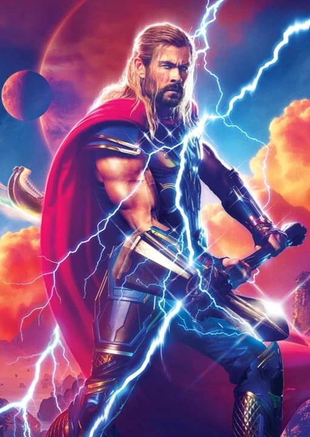
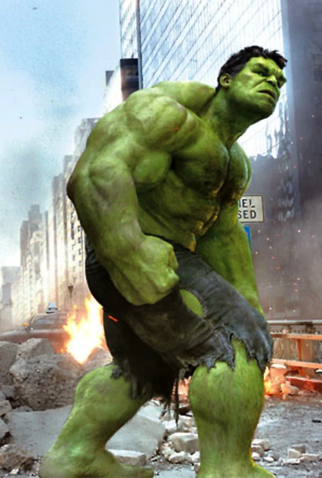
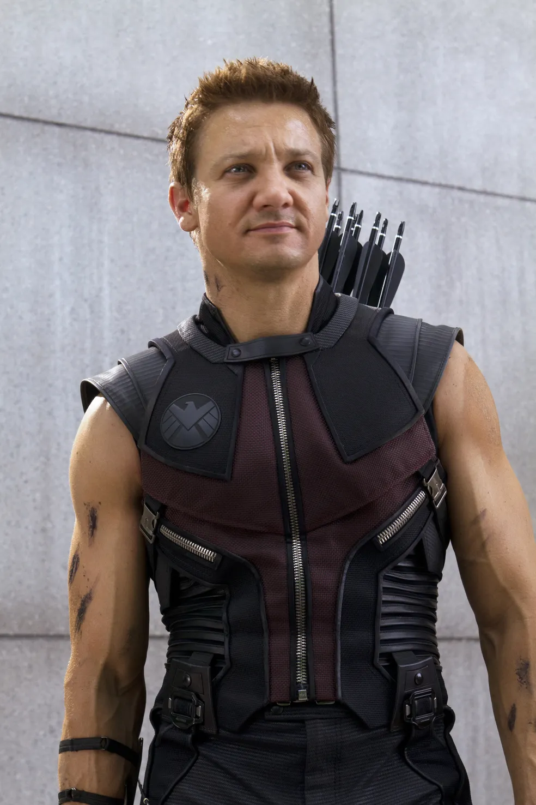
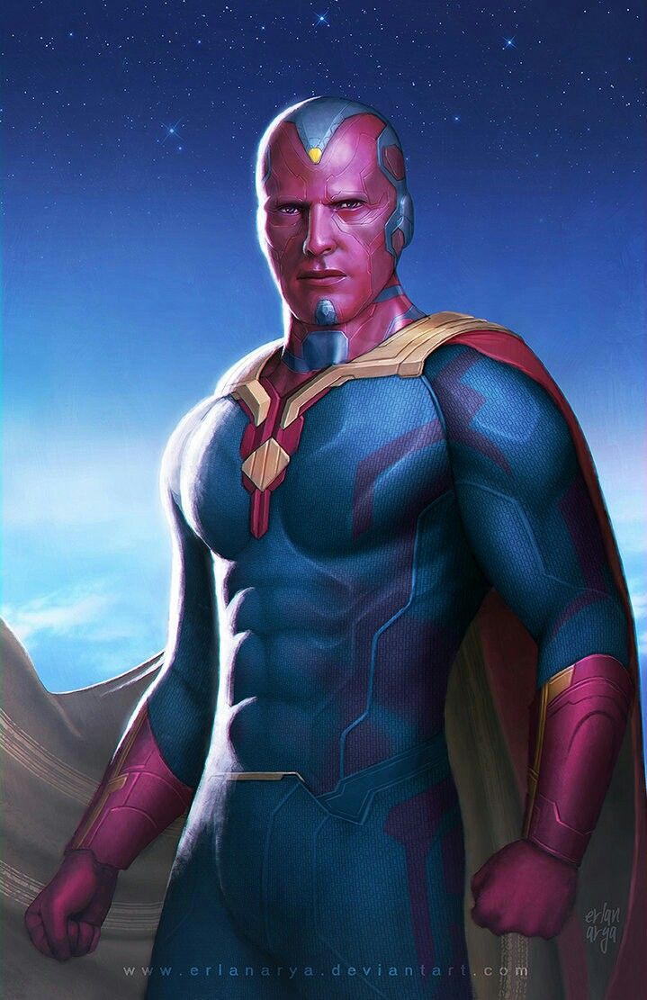
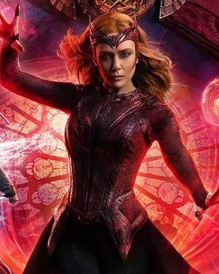
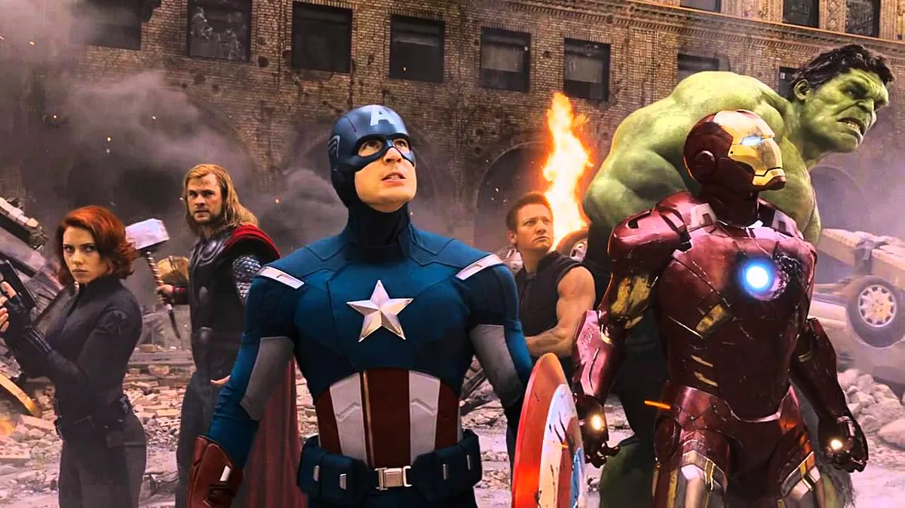
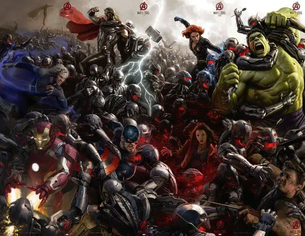
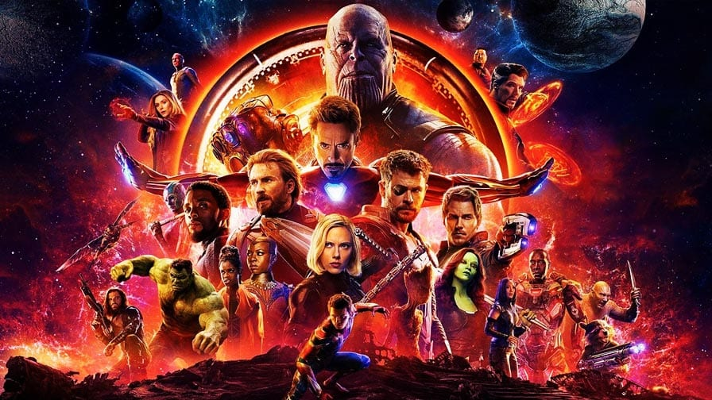

Origem da Equipe:
A equipe foi formada pela primeira vez em "The Avengers" (2012), quando Nick Fury, diretor da S.H.I.E.L.D., reuniu os heróis para enfrentar a ameaça de Loki. A ideia de criar uma equipe de heróis surgiu após o aparecimento de super-humanos como Carol Danvers.
Membros da Equipe
Homem de Ferro (Tony Stark):
Tony Stark é um inventor e empresário que criou a armadura de Homem de Ferro para salvar sua vida após ser sequestrado.Ele se tornou um membro fundador dos Vingadores.
Habilidades: Gênio inventor, bilionário, armadura de alta tecnologia

Capitão América (Steve Rogers):
Steve Rogers é um jovem que foi transformado em um super-soldado durante a Segunda Guerra Mundial. Ele se tornou um ícone da liberdade e um membro fundador dos Vingadores.
Habilidades: Super-soldado, habilidades físicas aprimoradas

Thor:
Thor é o deus nórdico do trovão que foi banido para a Terra por seu pai, Odin. Ele se tornou um membro dos Vingadores e lutou ao lado de seus novos amigos.
Habilidades: Poderes divinos, martelo Mjolnir

Hulk (Bruce Banner):
Bruce Banner é um cientista que foi exposto a radiação gama e se transformou no Hulk. Ele luta para controlar sua transformação e se tornou um membro dos Vingadores.
Habilidades: Força sobre-humana, regeneração

Viúva Negra (Natasha Romanoff):
Natasha Romanoff é uma espiã russa que foi treinada pelo programa Viúva Negra. Ela se tornou uma membro dos Vingadores e lutou ao lado de seus companheiros.
Habilidades: Espiã, assassina, habilidades de combate

Gavião Arqueiro (Clint Barton):
Clint Barton é um arqueiro habilidoso que foi treinado pela S.H.I.E.L.D. Ele se tornou um membro dos Vingadores e lutou ao lado de seus companheiros.
Habilidades: Arqueiro habilidoso, habilidades de combate

Visão:
Visão é um android criado por Ultron que se tornou um membro dos Vingadores. Ele possui a Joia da Mente e é capaz de processar informações de forma avançada.
Habilidades: Android, inteligência artificial, Joia da Mente

Feiticeira Escarlate (Wanda Maximoff):
Wanda Maximoff é uma jovem que possui habilidades telecinéticas e telepáticas. Ela se tornou uma membro dos Vingadores e lutou ao lado de seus companheiros.
Habilidades: Telecinese, telepatia

Falcão (Sam Wilson):
Sam Wilson é um amigo de Steve Rogers que se tornou o Falcão. Ele possui asas que lhe permitem voar e é um membro dos Vingadores
Habilidades: Asas, habilidades de voo

Soldado Invernal (Bucky Barnes):
Bucky Barnes é o melhor amigo de Steve Rogers que foi lavado cerebralmente e se tornou o Soldado Invernal. Ele se tornou um membro dos Vingadores e lutou ao lado de seus companheiros.
Habilidades: Habilidades físicas aprimoradas, habilidades de combate

Batalhas Épicas:
Os Vingadores enfrentaram várias batalhas épicas, incluindo:
Batalha de Nova York:
contra Loki e seu exército Chitauri.

Batalha contra Ultron:
contra o robô Ultron, criado por Tony Stark e Bruce Banner.

Guerra contra Thanos:
Uma luta épica contra o vilão Thanos, que buscava coletar as Joias do Infinito.

Legado
Os Vingadores deixaram um legado duradouro na proteção da Terra e do universo.
A equipe continua a ser uma força poderosa e unida, pronta para enfrentar novas ameaças e desafios.
← Voltar ao Menu Principal